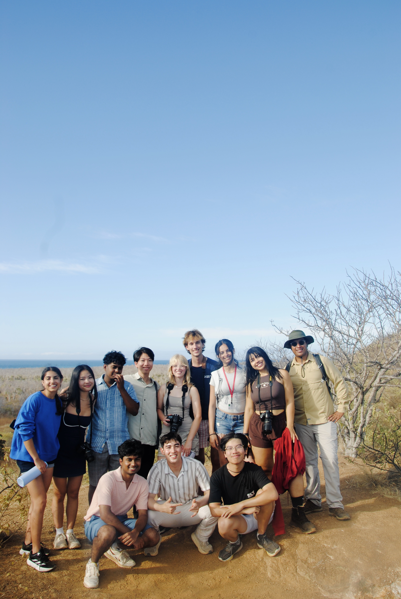
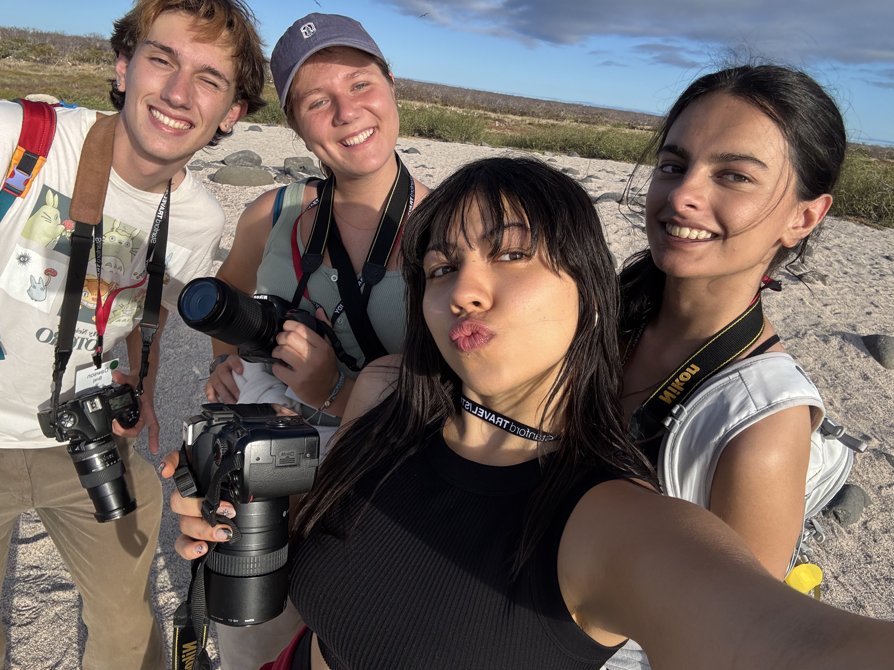

field work





a 60-year socio-ecological model of tourism and biodiversity in the galápagos islands.
overview
The Galápagos face a structural paradox: tourism generates ~50% of GDP and 71% of employment, yet unchecked growth degrades the biodiversity that makes the islands worth visiting. Visitor arrivals grew from 18,000 in 1985 to approximately 280,000 by 2024, well past UNESCO’s nominal zero-growth cap. Despite formal protections, the park received renewed “In Danger” warnings in 2023. Prior research treated economic and ecological impacts separately or used single-year snapshots. This project is the first to integrate a six-decade longitudinal panel with multi-objective optimization to find an empirically grounded carrying-capacity threshold.
The core methodological challenge was dataset construction. No single continuous series exists for most variables of interest. The panel (1960–2024) was assembled from heterogeneous sources: visitor arrivals from Observatorio de Galápagos; resident population via census anchors with exponential interpolation; economic variables calibrated using Taylor et al. (2003, 2009) CGE/SAM elasticities (the only available structural priors, given no continuous wage series exists); and wildlife populations for four focal species (Galápagos penguins, flightless cormorants, blue-footed boobies, and sea lions) reconstructed by anchoring to known census years with exponential interpolation and multiplicative ENSO shocks at documented events (1982–83, 1997–98, 2023–24). All variables were normalized to [0,1] and gaps filled with cubic splines.
Analysis used LOESS nonlinear smoothing to identify inflection points in the economic and ecological indices against visitor count, and a multi-objective welfare function W(V) = α·E(V) + (1−α)·B(V) maximized over V across α ∈ [0.3, 0.7] to assess robustness to weighting preferences. Net income per visitor was found to plateau around 160,000 visitors/year; wildlife population indices deteriorate sharply above ~220,000. The welfare-maximizing threshold is approximately 180,000–210,000 visitors/year, roughly 30–40% below current levels, and is robust across all tested weighting schemes.
field work


paper